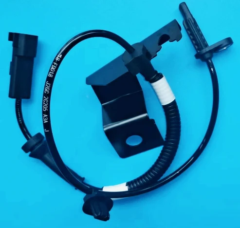

ABS Sensors
F2GZ2C205A F2GC2C205AB
Our part no. WL18-FD018 · brand WEILI
| OE number | F2GZ2C205A F2GC2C205AB |
|---|---|
| Brand | WEILI |
| Vehicle fitment | Front LH Ford Edge 15- 18 Taurus |
| Our part no. | WL18-FD018 |
Vehicle application
Front LH Ford Edge 15- 18 Taurus
More ABS Sensors
Buying this part
Guangzhou Yumengyang Auto Parts Co., Ltd. supplies ABS Sensor under our own brand WEILI. Send us the OE number on WhatsApp and we will confirm availability, price, MOQ and packing. Samples for testing are available on request.